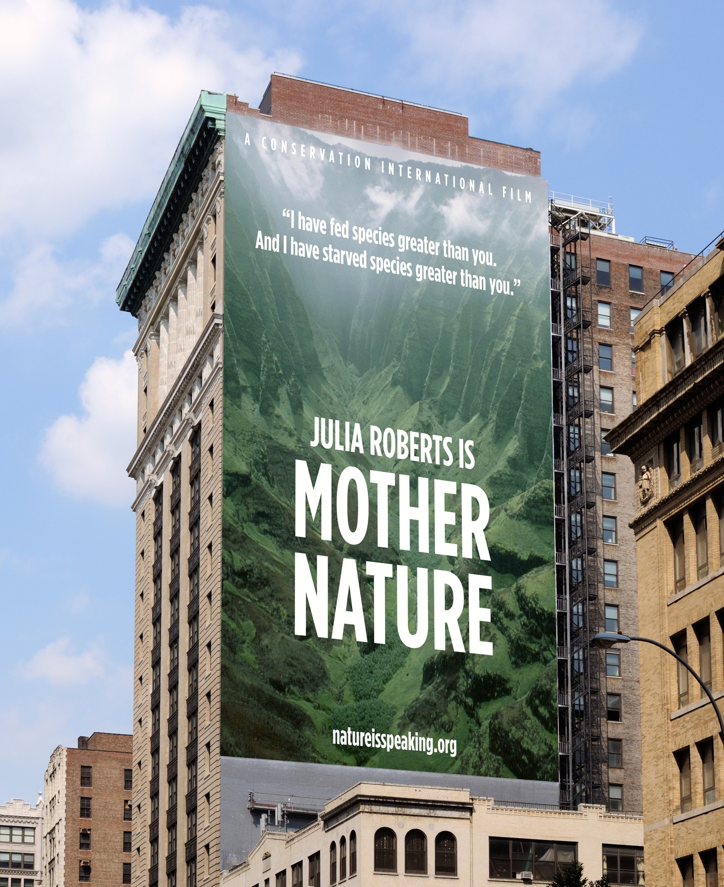
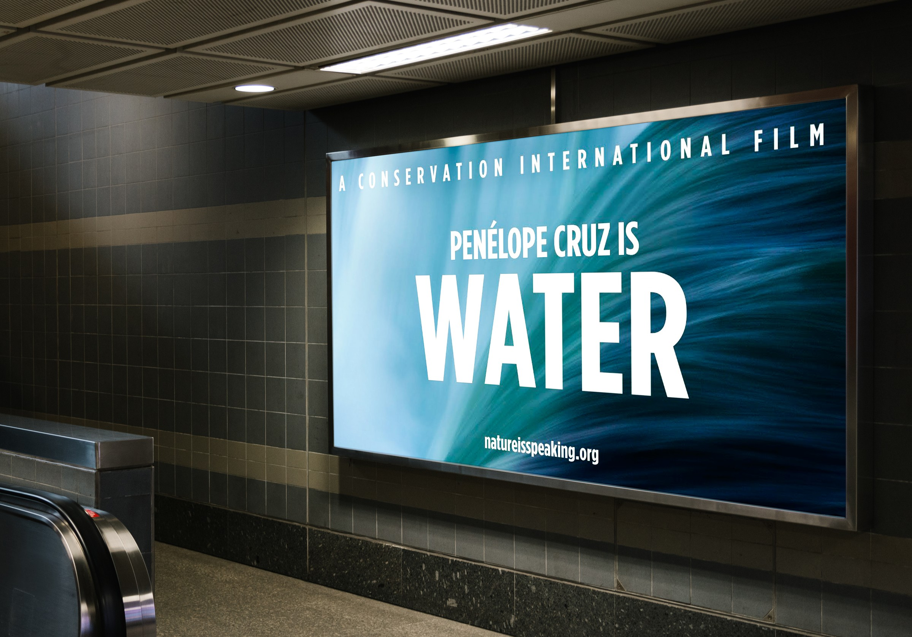
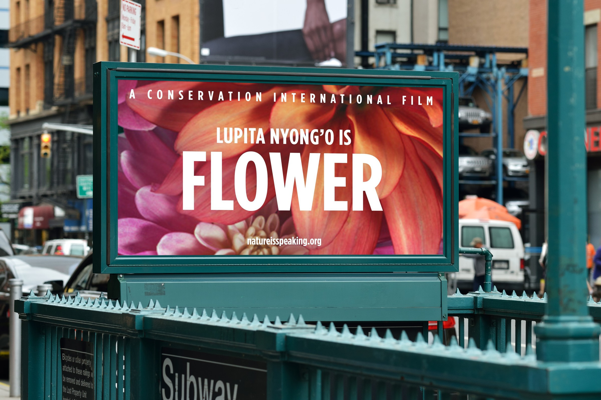
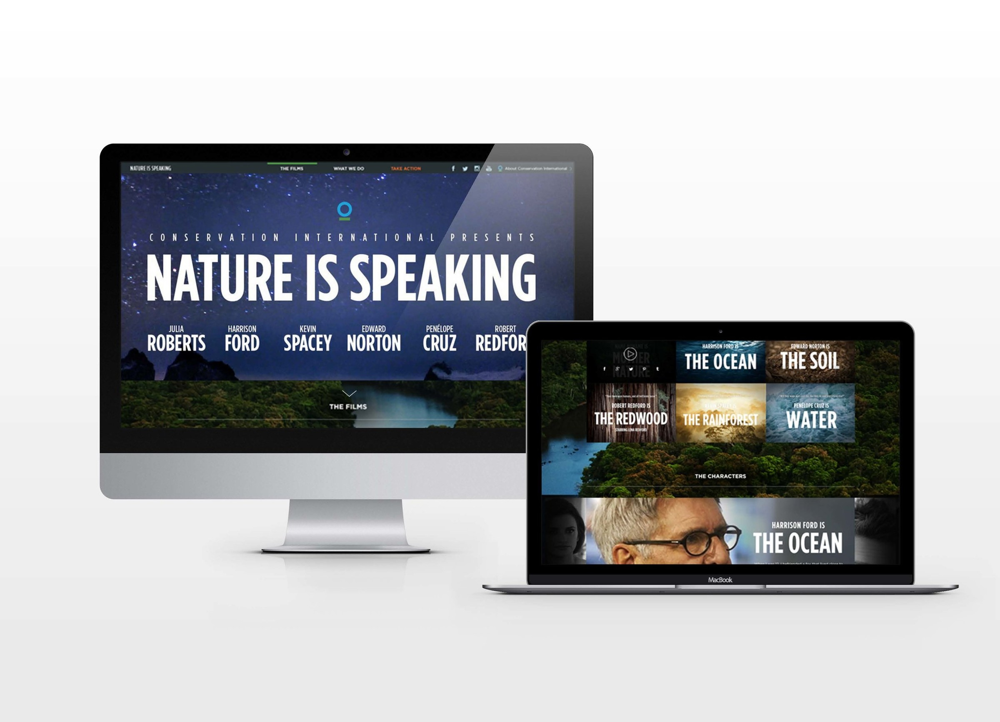
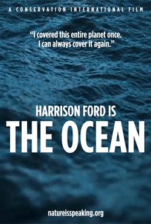
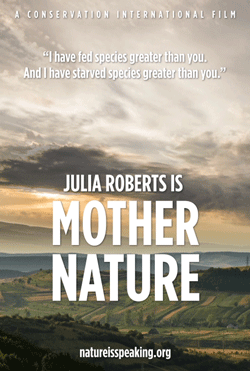
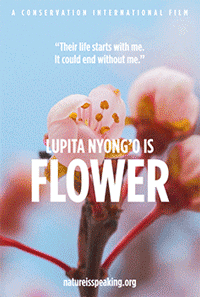
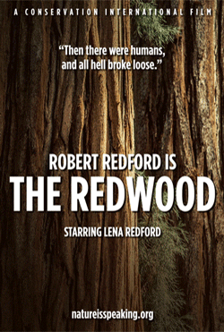
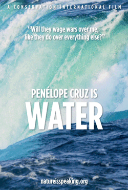
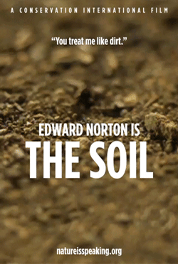

NATURE IS SPEAKING
Nature doesn’t need people.
But people need nature.
An awareness campaign for Conservation International gave nature a voice with help from some celebrity voices—and reminded everyone that nature doesn’t need us. People need nature.
Each week we promoted a new film for viewers to watch online at NatureIsSpeaking.org.
Cannes Film Craft: Gold Lion
- Role: Designer
- Art Director: Laura Niubo
- Writer: Tim Geoghegan
- Boss: Lee Clow









